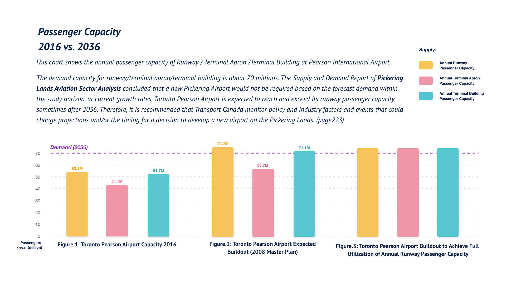
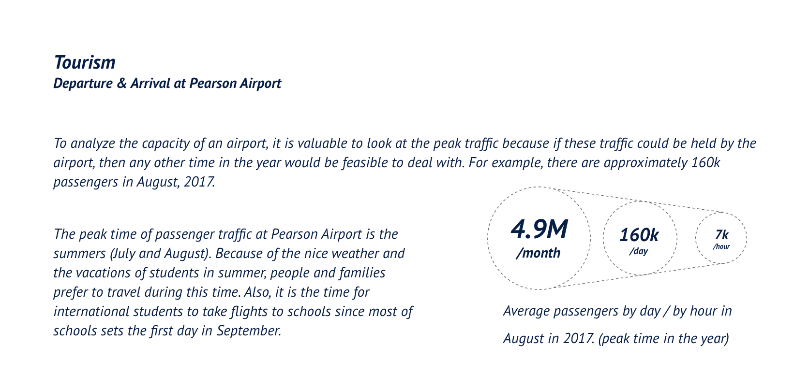
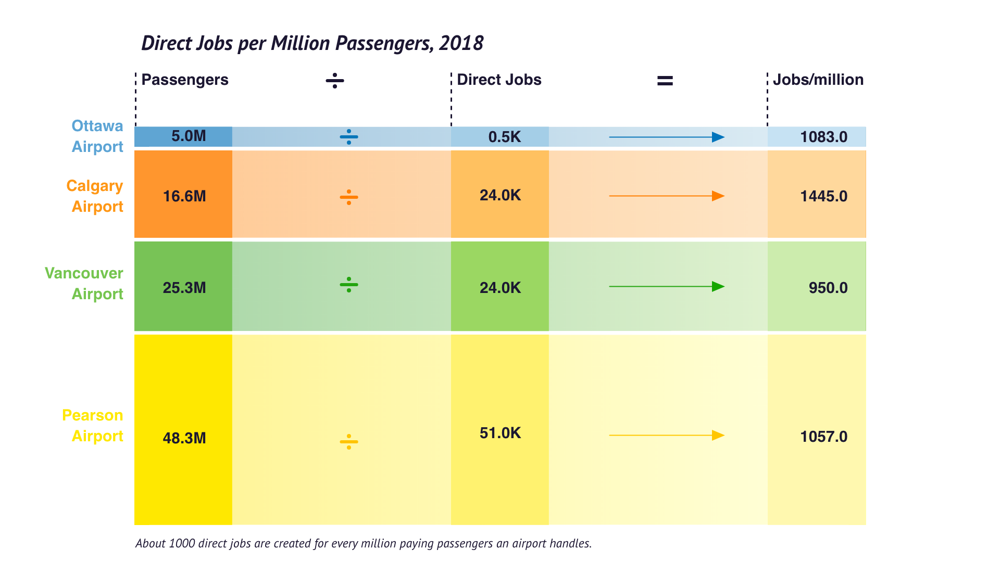

"Should a new Pickering International Airport be constructed?" Based on this question, this data story focuses on the analysis of the aviation situation in the GTA area to discuss the necessity of this proposal. From a small question, to a broader understanding.
How to read: This is a website built by
Shunrong Cao, April 2020. All illustrations and data visualizations are created by
Shunrong Cao. All sources are marked by a "Source" button that could be hovered on.
Pickering Airport is a proposed second International airport intended to serve the city of Toronto and the surrounding region.
According to the Pickering Lands Aviation Sector Analysis (p220), the reason of constructing a new Pickering International Airport is not only the lack of capacity in the southern Ontario airport system, but also other benefits:
ICON Source: Pablo Stanley. url: https://www.openpeeps.com
By comparing these opinions, we can examine the main reasons for the answers of “yes” or “no”:
1) For those who said “yes, it should be built”, they believe that the CAPACITY of airport systems could not take the aviation traffic in the future; however, those supporting “no, it should not be built” consider that there are already enough airports.
2) For those who said “yes”, they consider the benefit of ECONOMICS as an important reason to support the proposal.
3) In terms of GROUND TRANSPORTATION, those said “yes” think it takes too much time for people in Durham and York to reach Pearson, yet those said “no” believe that to solve this problem, the government should work more on the rail instead of a new airport.
4) ENVIRONMENTAL IMPACT is a concern for those said “no”, but according to those said “yes”, they think long-time ground transportation (such as from Durham to Pearson) causes more pollution.
Thus, it is valuable to analyze the “small” question of “Should the Pickering Airport be built?” through these four aspects, to have a broader and deeper view that is generated from this small question.
Viz Type: Exploded View Drawing, Tool: Adobe Photoshop
Capacity
Demand for air travel in Southern Ontario has been rising rapidly in the last decade. The total number of annual passengers enplaned and deplaned at international airports in the GGH grew 6.6% per year between 2010 and 2016 from 32.4 to 47.6 million, with Pearson handling over 93% of the traffic (Statistics Canada, 2018; Hamilton International Airport, 2017; Region of Waterloo International Airport, 2017).
As ranked second among North America airports for international connectivity, and the 5th most connected mega-hub globally, Lester B. Pearson International Airport serves as the main air hub in Toronto. To question if there is any need to construct a new Pickering Airport to relieve the aviation congestions, it is needed to analyze the flight data of Toronto Pearson Airport to calculate if the Capacity could fully meet the present and future demand of passengers.

Source
Data Source:
Pickering Lands Aviation Sector Analysis Supply and Demand Report by KPMG, WSP, and MMM Group.
Design Source:
Viz Type: Bar Chart, Tool:Adobe XD
Role of Pickering Airport:
According to the analysis by KPMG, Pickering Airport will probably become either an Industrial Airport or a specialty Passenger Airport, but not a primary Hub International Airport (due to conflict with Toronto Pearson Airport type and role), or a Passenger Feeder Airport (due to equivalent air service options at Toronto Pearson Airport), or a major cargo airport (due to conflict with Hamilton and Toronto Pearson Airport types and roles).(Pickering Lands Aviation Sector Analysis,p278)
The proposal is to create a secondary airport to handle excess traffic, with Pearson remaining the primary airport. Let's look at the analysis of cargo service and passenger capacity at Toronto Pearson Airport.
Interestingly, the growth of the International Sector is much more outstanding than the Domestic Sector and the Transborder Sector. In my perspective and understanding, the reasons might be:
1) There are airports mainly for domestic flights and cargos in the GTA area. Besides Toronto Pearson International Airport, other airports are scheduled for commercial airline service, dealing with domestic flights and cargo in GTA: Billy Bishop Toronto City Airport, John C. Munro Hamilton International Airport, and Region of Waterloo International Airport. Among these, Hamilton Airport (and Toronto Pearson Airport) serves as the major Air Cargo Airport. At present, Pearson Airport is the only airport in Toronto that is in charge of international flights, thus it would be helpful if there is a new international airport to relieve the congestion of international flights at Pearson.
2) International flight needs are increasing inevitably because of globalization, and Toronto is a well-developed and inclusive city that attracts people all over the world.
Besides the fact of the develop technology and growing economics, the reasons for the rapid increase of international aviations should include Tourism and International education.

Source
Info Source:
CAPA - Centre for Aviation. url: https://blueswandaily.com/airport-insight-toronto-lester-b-pearson-international-airport/
Viz Type: Radial Bar Chart, Tool: Hanabi data viz, Adobe XD
Source
Data Source:
Toronto Pearson. url: https://www.torontopearson.com/en/airlines
Design Source:
Earth Image: The Blue Marble by the crew of Apollo 17 (1972). url: https://en.wikipedia.org/wiki/The_Blue_Marble
Viz Inspiration: https://www.behance.net/gallery/89659403/Bureau-Oberhaeuser-Calendar-2020?tracking_source=search_projects_recommended%7Cdata%20visualization
Viz Tool: Adobe XD
Economic Impact
An independent study commissioned by the GTAA in 2016 concluded that Toronto Pearson contributes about $42 billion annually to Ontario’s economy or 6.3% of GDP. (Toronto Pearson)
Economic Benefits from Passengers: Aviation can bring economic benefits to Toronto, and international aviation could bring economic benefits to Canada. In 2017, 42% of visits (tourists, investors, and students) visiting Canada with economic impact arrived through Toronto Pearson. (GTAA 2018 Annual Report)
Economic Benefits from Cargos: In 2017, Toronto Pearson handled some $35 billion in goods shipped from producers in all provinces and territories to nearly every country around the globe. This represented about 67 percent of all Canadian exports by air. ($35 billion in exports to 200+ countries as air cargo) (GTAA 2018 Annual Report)
The new airport could also create jobs:

Source
Data Source:
Stats Canada, Annual Reports, media releases. url: https://pickeringairport.org/1748-2/
Design Source:
Viz Type: Alluvial Diagram, Tool: Flourish
This chart shows that about 1000 direct jobs are created for every million paying passengers an airport handles. According to the GTAA Report of Pearson, it is facilitating more than 330,000 jobs and directly employing about 50,000 people. Thus if the new Pickering Airport is in passenger service and if it could take 11.9 million passengers in 2032 (Pickering Airport Draft Plan Report), then there will be 12,000 direct jobs created. This corresponds with Durham Region Chair John Henry’s saying, “it could support around 150,000 direct and indirect jobs.” (CBC News)
To do in the future (not completing now because of the time limit)
1) Comparison of the GDP in the GTA and the GDP that Pearson created each year.
2) Are there any commercial opportunities could be created because of the construction of Pickering Airport in Durham?
3) How much economic impact will the cargo service bring?
4) ...etc.
Ground Transportation
Why Pickering?
The Pickering Airport Lands are located within an integrated transportation network, including high capacity roads (e.g., Highways 401, 407, 7 and 2), Metrolinx GO Transit bus and train, rail services (e.g., CNR and CPR railways), as well as deep-sea port access in nearby Oshawa.
Compared with other potential areas, the development of this project would require less new infrastructure. (City of Pickering)
2. Pickering Lands Aviation Sector Analysis Supply and Demand Report by KPMG, WSP, and MMM Group.
Design Source:
Viz Type: Column Chart, Tool: Flourish
To do in the future (not completing now because of the time limit)
1) Routes for residents in the east GTA to get to different airports.
2) How much time could the residents in the east GTA save to get to the Pickering Airport than the Pearson Airport?
3) ...etc.
Environmental Impact
Question: Is there any need to construct a new airport because of the above reasons, at the expense of the environment?
The construction of a new airport will have an environmental impact. And the construction also means more flights and more carbon footprints. I want to create an interactive page to visualize the emissions of air flights, using API for calculating flights emissions and leave this as an open-ended ended question. However, I did not have time to finish it and I will work on this in the future.